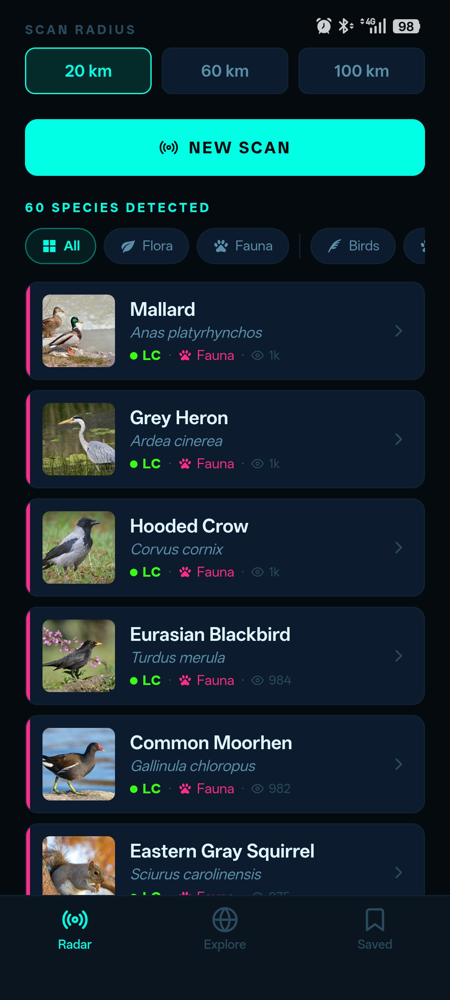
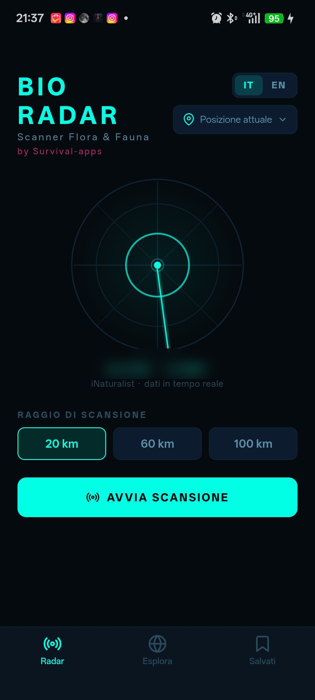
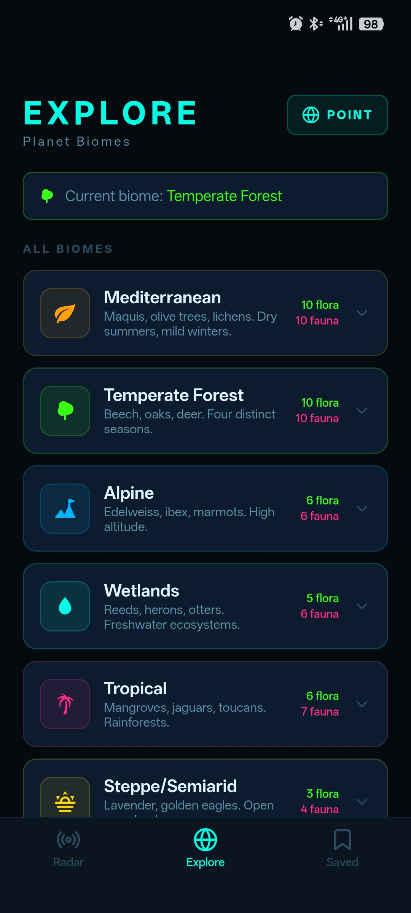

BioRadar turns your phone into a flora & fauna scanner: hit START SCAN and the app queries iNaturalist, the citizen-science platform with hundreds of millions of real observations, to show you what's actually been spotted within 20, 60 or 100 km of you. Every species comes with a photo, scientific name and IUCN conservation status.



cb07bca1b27e5b60ed43c27ea7466bed26e56413e8164883574c128e92a89b87